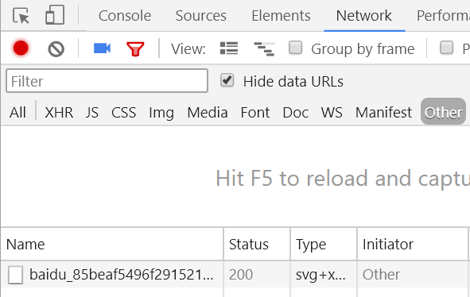

1.背景介绍
2.知识剖析
3.常见问题
4.解决方案
5.编码实战
6.扩展思考
7.参考文献
8.更多讨论
HTTP状态码（HTTP Status Code）是用以表示网页服务器HTTP响应状态的3位数字代码。它由 RFC 2616 规范定义的，并得到RFC 2518、RFC 2817、RFC 2295、RFC 2774、RFC 4918等规范扩展。
http状态码的核心作用是Web Server服务器用来告诉客户端，当前的网页请求发生了什么事，或者说当前Web服务器的响应状态。所以HTTP状态码常用来判断和分析当前Web服务器的运行状况。 我们作为程序猿，需要对这些状态码，尽可能了解的更多一些，将这些状态码一一弄清楚，工作中遇到的时候，能够明白问题出在哪里，针对性的解决问题
200 OK 服务器成功处理了请求（这个是我们见到最多的）
301/302 Moved Permanently（重定向）请求的URL已移走。Response中应该包含一个Location URL, 说明资源现在所处的位置
404 Not Found(页面丢失)未找到资源
501 Internal Server Error服务器遇到一个错误，使其无法对请求提供服务
1.浏览器的F12调试（或者右键检查），network查看Status.再刷新页面就能看到了
2.各种在线输入网址查询HTTP状态的工具：
比如：站长工具，http状态查询
其他的应该还有很多，可以自己去搜索一下。
参考一： http状态码是什么，有什么用，在哪里查看，分别代表什么意思？
参考二： 菜鸟教程：HTTP教程-HTTP状态码
参考三： 百度百科
感谢大家观看
By 刘仁瑞